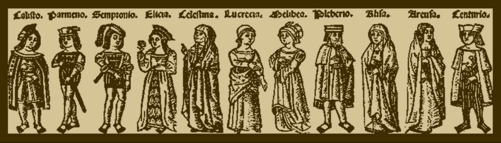
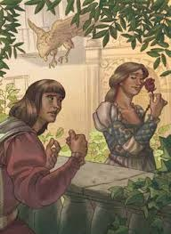
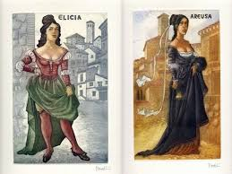

En esta página web se estará mostrando los distintos personajes que componen la obra literaria "La Celestina".

Los personajes que componen la obra son:
Calisto: Personaje principal en la historia, es un hombre joven y no de uan calse baja. Se enamora perdidamente de Melibea, una joven mujer que encuentra en un jardín. Recurre a una hechicera para que le ayude a conquistarla a cambio de dinero. Calisto logra su objetivo y cuando menos se espera por una caída fallece.
Melibea: Junto a Calisto, Melibea es un personaje principal en la historia y dentro del contexto histórico no era tan joven, tenía aproximadamente 21 años de edad. A causa de un hechizo se enamora de Calisto y se ven en el jardín en las noches.

Celestina: celestina era una hechicera y alcahueta, provoca que Melibea se enamore de Calisto a petición de este. Era mayor de edad, según el libro de entre 60 a 72 años de edad. Esta tenía mala fama entre las personas de clase media y baja por sus trabajos y acciones.
Sempronio: Amigo y siervo de Calisto termina muerto a causa de su avaricia.
Pármeno: También amigo y sirviente de Calisto, cercanoo a Sempronio y de cierta manera a Celestina debido a los lazos con su madre.
Elicia: Amante de Pármeno y considerada como una hija por Celestina, ofrecía su cuerpo por dinero.
Areúsa:Amante de Sempronio, considerada como una hija por Celestina y por lo visto como una hermana por Elicia. Junto a Areúsa deciden vengar la muerte de Celestina.

Lucrecia: Criada de Melibea y su familia, percibe algo raro en Celestina desde el comienzo.
Tristán:Criado de Calisto y amigo cercano, lo acompaña en las noches a ver a Melibea.
Sosia: También criado de Calisto, se enamora de Areúsa y esta le saca infomación sobre Calisto.
Pleberio: Padre de Melibea, presencia el suicidio de su hija y no sabia de su relación con Calisto hasta el final
Alisa: Madre de Melibea, mágicamente deja a su hija con una extraña en su casa debido a la "enfermedad" de su hermana.